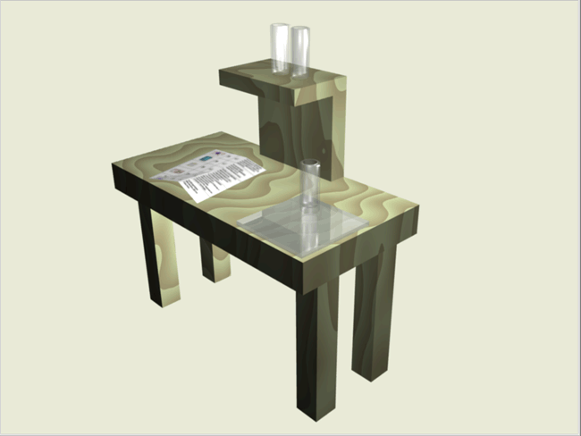

Материалы в Blender. Практическая работа. Урок 14
Разработка урока к элективному курсу "3D-моделирование в Blender"
Цель: на примере моделирования сцены стола для опытов научиться применять к объектам материалы и текстуры.

Инструкционная карта
Часть 1. Модель деревянного стола
- Откройте ранее сохраненную модель стола или создайте новую по плану практической работы урока 5.
- Выделите стол. Добавьте ему материал (если он будет отсутствовать), а затем — текстуру Wood (древесина).
- В кнопках текстур на вкладке Wood включите кнопки RingNoise (кольцевые помехи), Saw (пила), Soft noise (мягкий шум), увеличьте значение Turbulence (турбуленция) до 10.
- Снова вернитесь к кнопкам материала.
- Установите цвет материала (близкий к цвету древесины), затем установите цвет текстуры на вкладке Map To немного темнее или светлее первого.
Часть 2. Модель стеклянной посудины
- Откройте ранее сохраненную модель колбы или создайте новую колбу или пробирку по плану практической работы урока 9 (п. 3).
- В настройках материала объекта установите значение Alpha (A) в значение 0.2. Включите кнопку ZTransp или Ray Transp.
Часть 3. Модель зеркального стекла
- Разместите на сцене экструдированную плоскость или сплюснутый куб.
- Пусть объект обладает отражающей способностью (зеркальностью). Для этого нажмите кнопку Ray Mirror на вкладке Mirror Transp и установите одноименный движок в значение, например, 0.5.
- Установите также прозрачность (A = 0.5 и ZTransp). В итоге, у вас получится стеклянная поверхность, обладающая отражающим эффектом.
Часть 4. Исписанный лист бумаги
- Разместите на сцене плоскость.
- Установите для нее текстуру Image и загрузите изображение (предварительно подготовленное, с изображением текста).
- Войдите в режим редактирования плоскости и подразделите ее один или два раза (Tab ? W ? Subdivide).
- В кнопках материала на вкладке Map To найдите кнопку Disp и нажмите её. Затем на той же вкладке установите одноименный движок в значение 0.1. Это придаст плоскости "помятый" вид.